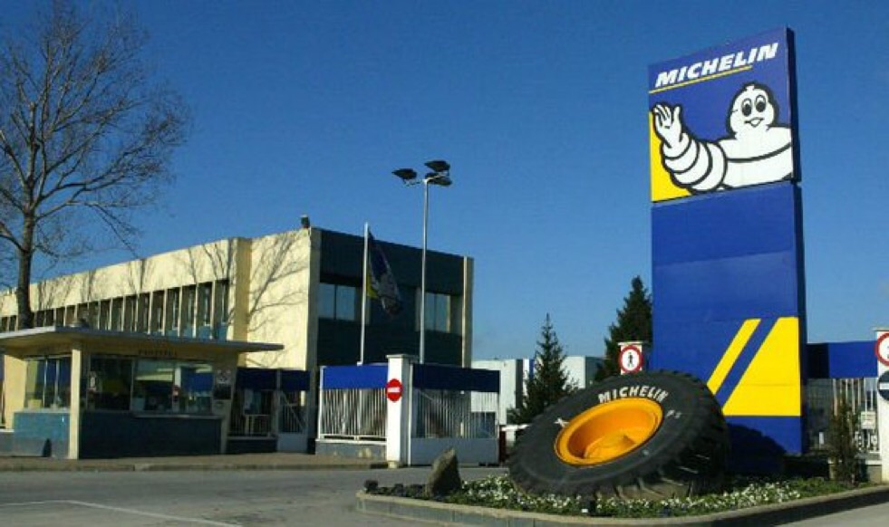
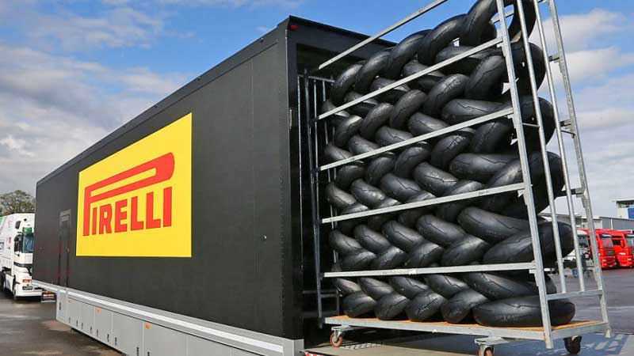
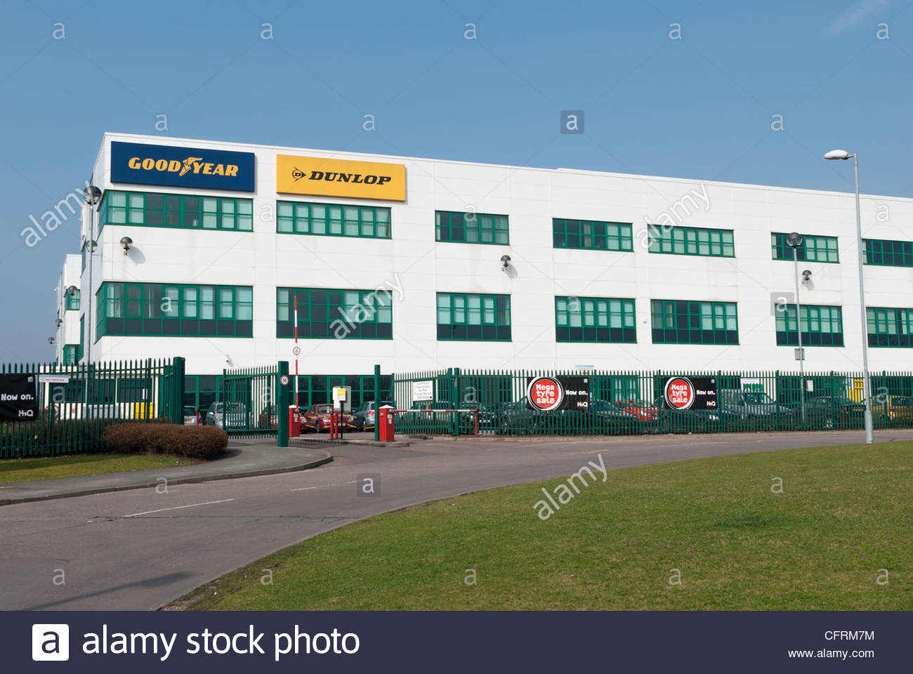

ONGI ETORRI GURE WEB ORRIALDERA!
Web orrialde honetan, ze enpresekin garen aliatuta azalduko da:

1-Michelin:
"Michelin" enpresarekin duela 2 urte aliatu giñen (2018ko urtarrilaren 26an).Bere familiaren enpresa 1832an sortu zen, bi lehengusuek, Aristide Barbierrek eta Nicolas Edouard Daubrée-k, nekazaritzako makinen fabrika txiki bat ireki zutenean.
Enpresa hau, batez ere kotxeko eta mototako gurpilak egiten dituzte, bai gurpil arruntak eta bai karrerazko gurpilak.

2-Pirelli:
"Pirelli" enpresarekin duela 3 urte aliatu giñen (2017ko urtarrilaren 20an).Pirelli & C. S.p.A. Milanen oinarritutako eta Txinaren jabetzako neumatikoen fabrikazioan diharduen Italiako industria enpresa da.
Enpresa hau, forumla 1entzako egiten ditu gurpilak.

3-Dunlop:
"Dunlop" enpresarekin duela 1 urte aliatu giñen (2019ko abenduaren 10ean).Dunlop neumatikoen eta gomazko produktuen Erresuma Batuko fabrikatzailea da. Gaur egun, Dunlop Goodyearren% 75 da eta% 25 Sumitomo Rubber Industries..
Enpresa hau, batez ere, kotxeko gurpilak fabrikatzen ditu.